9 Facets, multiplots and margins
One plot can split into panels by data (facets), several plots can share one image (plot/arrange, plot/pairs, :custom-grid), and a panel can carry charts beside it (:margins).
(ns reference.facets-arrange
(:require [cljplot2.chart :as chart]
[cljplot2.core :as plot]
[cljplot2.data.facet :as facet]
[cljplot2.describe :as describe]
[cljplot2.layout.plot-grid :as plot-grid]
[cljplot2.pipeline :as pipeline]
[notebook-utils :as nu]))The table below holds the mtcars cars; every section draws them:
Data: Motor Trend car road tests (1974), R datasets package mtcars (Henderson & Velleman 1981); licence: Part of R (GPL-2 | GPL-3).
(def mtcars (nu/dataset :mtcars))| model | mpg | cyl | disp | hp | drat | wt | qsec | vs | am | gear | carb |
|---|---|---|---|---|---|---|---|---|---|---|---|
| Mazda RX4 | 21 | 6 | 160 | 110 | 3.9 | 2.62 | 16.46 | 0 | 1 | 4 | 4 |
| Mazda RX4 Wag | 21 | 6 | 160 | 110 | 3.9 | 2.875 | 17.02 | 0 | 1 | 4 | 4 |
| Datsun 710 | 22.8 | 4 | 108 | 93 | 3.85 | 2.32 | 18.61 | 1 | 1 | 4 | 1 |
| Hornet 4 Drive | 21.4 | 6 | 258 | 110 | 3.08 | 3.215 | 19.44 | 1 | 0 | 3 | 1 |
| Hornet Sportabout | 18.7 | 8 | 360 | 175 | 3.15 | 3.44 | 17.02 | 0 | 0 | 3 | 2 |
| Valiant | 18.1 | 6 | 225 | 105 | 2.76 | 3.46 | 20.22 | 1 | 0 | 3 | 1 |
| Duster 360 | 14.3 | 8 | 360 | 245 | 3.21 | 3.57 | 15.84 | 0 | 0 | 3 | 4 |
| Merc 240D | 24.4 | 4 | 146.7 | 62 | 3.69 | 3.19 | 20 | 1 | 0 | 4 | 2 |
| Merc 230 | 22.8 | 4 | 140.8 | 95 | 3.92 | 3.15 | 22.9 | 1 | 0 | 4 | 2 |
| Merc 280 | 19.2 | 6 | 167.6 | 123 | 3.92 | 3.44 | 18.3 | 1 | 0 | 4 | 4 |
| Merc 280C | 17.8 | 6 | 167.6 | 123 | 3.92 | 3.44 | 18.9 | 1 | 0 | 4 | 4 |
| Merc 450SE | 16.4 | 8 | 275.8 | 180 | 3.07 | 4.07 | 17.4 | 0 | 0 | 3 | 3 |
| Merc 450SL | 17.3 | 8 | 275.8 | 180 | 3.07 | 3.73 | 17.6 | 0 | 0 | 3 | 3 |
| Merc 450SLC | 15.2 | 8 | 275.8 | 180 | 3.07 | 3.78 | 18 | 0 | 0 | 3 | 3 |
| Cadillac Fleetwood | 10.4 | 8 | 472 | 205 | 2.93 | 5.25 | 17.98 | 0 | 0 | 3 | 4 |
| Lincoln Continental | 10.4 | 8 | 460 | 215 | 3 | 5.424 | 17.82 | 0 | 0 | 3 | 4 |
| Chrysler Imperial | 14.7 | 8 | 440 | 230 | 3.23 | 5.345 | 17.42 | 0 | 0 | 3 | 4 |
| Fiat 128 | 32.4 | 4 | 78.7 | 66 | 4.08 | 2.2 | 19.47 | 1 | 1 | 4 | 1 |
| Honda Civic | 30.4 | 4 | 75.7 | 52 | 4.93 | 1.615 | 18.52 | 1 | 1 | 4 | 2 |
| Toyota Corolla | 33.9 | 4 | 71.1 | 65 | 4.22 | 1.835 | 19.9 | 1 | 1 | 4 | 1 |
| Toyota Corona | 21.5 | 4 | 120.1 | 97 | 3.7 | 2.465 | 20.01 | 1 | 0 | 3 | 1 |
| Dodge Challenger | 15.5 | 8 | 318 | 150 | 2.76 | 3.52 | 16.87 | 0 | 0 | 3 | 2 |
| AMC Javelin | 15.2 | 8 | 304 | 150 | 3.15 | 3.435 | 17.3 | 0 | 0 | 3 | 2 |
| Camaro Z28 | 13.3 | 8 | 350 | 245 | 3.73 | 3.84 | 15.41 | 0 | 0 | 3 | 4 |
| Pontiac Firebird | 19.2 | 8 | 400 | 175 | 3.08 | 3.845 | 17.05 | 0 | 0 | 3 | 2 |
| Fiat X1-9 | 27.3 | 4 | 79 | 66 | 4.08 | 1.935 | 18.9 | 1 | 1 | 4 | 1 |
| Porsche 914-2 | 26 | 4 | 120.3 | 91 | 4.43 | 2.14 | 16.7 | 0 | 1 | 5 | 2 |
| Lotus Europa | 30.4 | 4 | 95.1 | 113 | 3.77 | 1.513 | 16.9 | 1 | 1 | 5 | 2 |
| Ford Pantera L | 15.8 | 8 | 351 | 264 | 4.22 | 3.17 | 14.5 | 0 | 1 | 5 | 4 |
| Ferrari Dino | 19.7 | 6 | 145 | 175 | 3.62 | 2.77 | 15.5 | 0 | 1 | 5 | 6 |
| Maserati Bora | 15 | 8 | 301 | 335 | 3.54 | 3.57 | 14.6 | 0 | 1 | 5 | 8 |
| Volvo 142E | 21.4 | 4 | 121 | 109 | 4.11 | 2.78 | 18.6 | 1 | 1 | 4 | 2 |
9.1 Facet shape
Mapping :facet wraps one panel per level into rows and columns; :facet-col and :facet-row make a grid of them. These keys of the plot’s :facets map shape the wrap and weight the panel columns and rows. The plot below wraps the carburettor counts into four columns, filled from the bottom:
(plot/render-image {:data mtcars
:mapping {:x :wt :y :mpg :facet :carb}
:charts [(chart/scatter)]
:facets {:columns 4 :order :bottom-up}}
{:width 800 :height 400})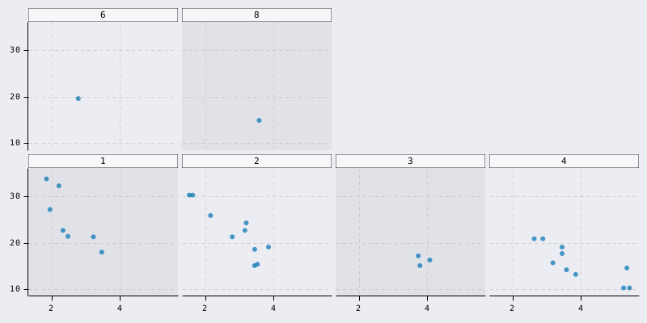
9.2 Facet panels
These keys decide how the panels share their scales, what happens to nil facet values and whether the panels draw strips. The plot below frees the x scales of a grid (per column) and widens its last column with the shape key :widths:
(plot/render-image {:data mtcars
:mapping {:x :wt :y :mpg :facet-col :cyl :facet-row :am}
:charts [(chart/scatter)]
:facets {:scales {:x :free} :widths [1 1 2]}}
{:width 800 :height 450})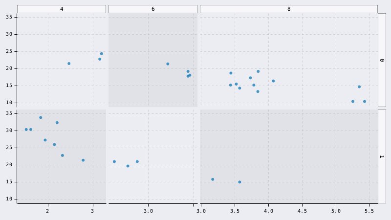
In the plot below :sliced y scales give the panels y ranges of one size at different heights:
(plot/render-image {:data mtcars
:mapping {:x :wt :y :mpg :facet :cyl}
:charts [(chart/scatter)]
:facets {:scales {:y :sliced} :columns 3}}
{:width 800 :height 300})
9.3 Facet levels
The facet levels have scales: :scales {:facet spec} (and :facet-col, :facet-row) order the panels and write the strip texts. The plot below orders the gears from five down and names them:
(plot/render-image {:data mtcars
:mapping {:x :wt :y :mpg :facet :gear}
:charts [(chart/scatter)]
:scales {:facet {:domain [5 4 3] :formatter #(str % " gears")}}}
{:width 800 :height 300})
9.4 Arrange
plot/arrange puts plots in a grid; use it to show several plots in one image, their panels aligned across rows and columns.
plots– The plot maps of the cells, filled row by row.
:arrange key holds the plots and the layout.The cards below show these groups as plot/arrange options:
The plot below puts three plots in a row weighted 2 : 1 : 1, under a title:
(plot/render-image (plot/arrange [{:data mtcars :mapping {:x :hp :y :mpg} :charts [(chart/scatter)]}
{:data mtcars :mapping {:x :mpg} :charts [(chart/histogram {:bins 10})]}
{:data mtcars :mapping {:x #(str (:cyl %) " cyl") :y :mpg} :charts [(chart/box)]}]
{:columns 3 :widths [2 1 1] :title "mtcars"})
{:width 900 :height 350})
plot/build throws an error when a cell is too small for its sub-plot’s axes, labels, legends and margins. The error names the cell ([:plot i], row by row; a nested cell by its whole path, outer cells first), its title (else its mapped :x / :y), its size and the pixels it needs, under :width or :height. Below, eight plots stand side by side in 400 pixels:
(try (plot/build (plot/arrange (repeat 8 {:data mtcars :mapping {:x :hp :y :mpg} :charts [(chart/scatter)]})
{:columns 8})
{:width 400 :height 200})
(catch clojure.lang.ExceptionInfo e
{:message (ex-message e) :data (ex-data e)})){:message
"Sub-plot [:plot 0] (x :hp, y :mpg) is 39x180 px; its axes, labels, legends and margins need 57 px of width. Enlarge the image or the cell, or shrink the sub-plot's fixed parts.",
:data
{:key :width,
:axis :columns,
:available 39,
:cause :track-space,
:required 57,
:errors
[{:in nil,
:message
"Not enough space: the plot's fixed parts (axes, labels, legends, strips, margins, gaps) need 57 px of width, 39 px given."}],
:subplot [:plot 0],
:subplot-path [[:plot 0]]}}plot/arrange returns a plot whose :arrange map holds the plots and the options above. You can also write that map by hand, with its plots under :plots:
The plot below shows a legend once, in its own cell: the two plots hide their legends (:legend false), and a third plot draws only its legend (:legend-only true - no panel or axes) in a column sized to fit (:measured):
(plot/render-image {:arrange {:plots [{:data mtcars :mapping {:x :hp :y :mpg :color :gear} :charts [(chart/scatter)]
:scales {:color {:type :categorical}} :legend false}
{:data mtcars :mapping {:x :wt :y :mpg :color :gear} :charts [(chart/scatter)]
:scales {:color {:type :categorical}} :legend false}
{:data mtcars :mapping {:x :wt :y :mpg :color :gear} :charts [(chart/scatter)]
:scales {:color {:type :categorical}} :legend-only true}]
:columns 3 :widths [1 1 :measured]}}
{:width 900 :height 320})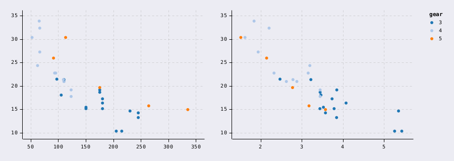
Without :rows, a :row-spans span that reaches past the last row adds rows. The plot below puts one legend beside two rows of plots and stretches its colour bar over both:
(plot/render-image (plot/arrange [{:data mtcars :mapping {:x :hp :y :mpg :color :wt} :charts [(chart/scatter)] :legend false}
{:data mtcars :mapping {:x :hp :y :mpg :color :wt} :charts [(chart/scatter)] :legend-only true}
{:data mtcars :mapping {:x :disp :y :mpg :color :wt} :charts [(chart/scatter)] :legend false}]
{:columns 2 :widths [1 :measured] :row-spans {1 2}})
{:width 600 :height 500})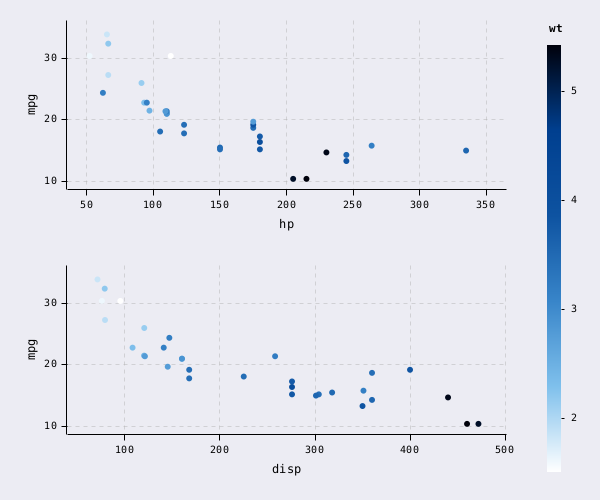
9.5 Scatter-plot matrix
plot/pairs draws a cell for every pair of its variables (2 to 20 numeric columns); use it to see how several variables relate at once. By default a scatter plot fills the cells below the diagonal, the correlation as a number those above, and a density the diagonal.
rows– The data: rows or columns.Columns:- a variable column – Numbers of a variable named in
:variables(or:row-variables,:column-variables); a row without a number there is left out of that variable's cells.
- a variable column – Numbers of a variable named in
These options choose the variables:
The plot below draws four variables; its :upper spells out the default, a correlation chart:
(plot/render-image (plot/pairs mtcars {:variables [:mpg :hp :wt :qsec]
:upper [(chart/correlation)]})
{:width 700 :height 700})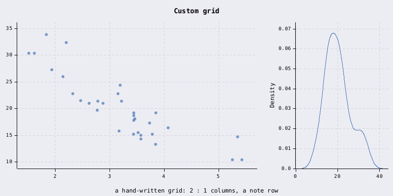
:row-variables and :column-variables (each defaulting to :variables) put other variables, or another order, on the rows than on the columns - here 3 rows x 2 columns. Such a matrix has no triangles: every cell of two different variables draws :lower, a cell whose row and column variable are the same draws :diagonal (wherever it is), and :upper is an error.
(plot/render-image (plot/pairs mtcars {:row-variables [:hp :wt :mpg]
:column-variables [:mpg :disp]
:lower [(chart/scatter) (chart/smooth {:method :lm})]
:mapping {:color #(str (:cyl %) " cyl")}})
{:width 600 :height 700})
These options set what the cells draw. The plot below draws faded points below the diagonal, shaded correlations above it and the names on it:
(plot/render-image (plot/pairs mtcars {:variables [:mpg :hp :wt]
:lower (chart/scatter {:alpha 0.6})
:upper (chart/correlation {:glyph :shade})
:diagonal :names
:scales {:color {:domain [-1 1]}}})
{:width 500 :height 450})
The plot below layers points and a linear fit below the diagonal and leaves the cells above it empty:
(plot/render-image (plot/pairs mtcars {:variables [:mpg :hp :wt]
:lower [(chart/scatter {:size 4}) (chart/smooth {:method :lm})]
:upper :none
:title "a scatter and a linear fit below, nothing above"})
{:width 600 :height 560})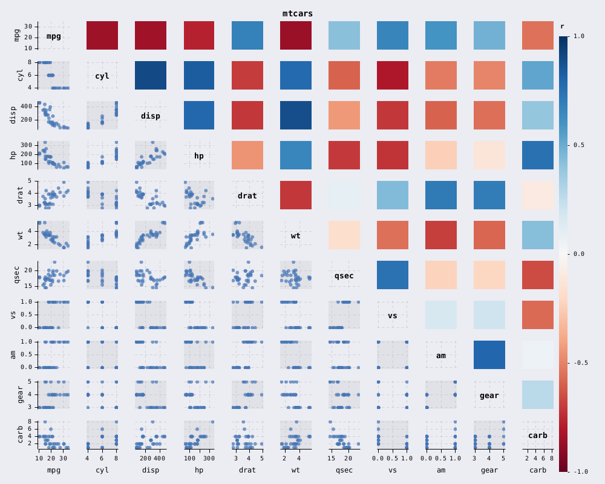
These options set the matrix’s legend column and theme; the title is a builder option:
Only the outer cells have axes (x under the bottom row, y left of the left column), and every panel gets one size (the room between rows follows each row’s end tick labels), so a matrix of many variables fits a page - up to 20, though at that count tick labels get dense: give such a matrix a large image. Its rows are low, so a legend taller than a row goes beside the whole matrix with :legend-span :matrix (the default :row keeps it beside the first row) - here every numeric column of mtcars, with the r colour bar of the shaded correlations as tall as the matrix.
(plot/render-image (plot/pairs mtcars {:variables [:mpg :cyl :disp :hp :drat :wt :qsec :vs :am :gear :carb]
:upper (chart/correlation {:glyph :shade})
:diagonal :names
:legend-span :matrix
:title "mtcars"})
{:width 1000 :height 800})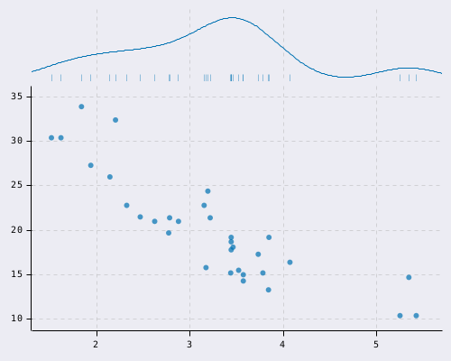
9.6 Margins
The plot’s :margins key puts charts beside a panel, sharing its horizontal or vertical scale; margin charts read the plot’s data with :x mapped to the shared dimension. These keys name the sides. The plot below draws a density and a rug above the panel:
(plot/render-image {:data mtcars
:mapping {:x :wt :y :mpg}
:charts [(chart/scatter)]
:margins {:top [(chart/density) (chart/rug)]}}
{:width 500 :height 400})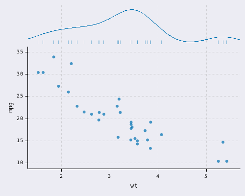
A margin given as a map also sets its thickness and axis:
The plot below draws a density above the panel and a thinner histogram with its axis on the right:
(plot/render-image {:data mtcars
:mapping {:x :wt :y :mpg}
:charts [(chart/scatter)]
:margins {:top (chart/density) :right {:charts (chart/histogram {:bins 10}) :size 60 :axis true}}}
{:width 600 :height 500})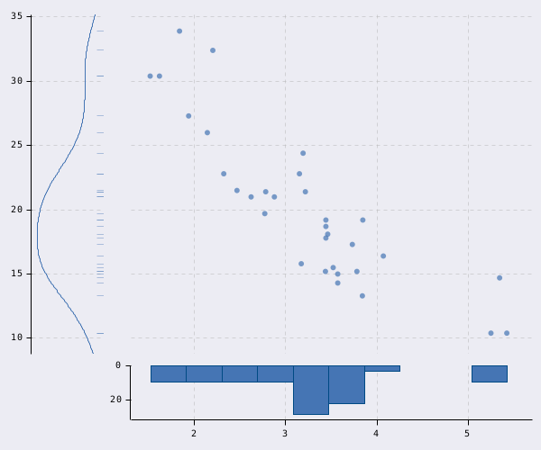
Bottom and left margins sit between the panel and its axes - the panel keeps its axes on the outer side. Their magnitudes grow away from the panel (bars hang down, densities grow to the left). A margin’s magnitude axis stays next to its own margin panel - with a left margin too, the bottom margin’s axis sits between the left margin and the panel - and its tick labels keep a gap from the panel axis’s labels:
(plot/render-image {:data mtcars
:mapping {:x :wt :y :mpg}
:charts [(chart/scatter)]
:margins {:bottom {:charts (chart/histogram {:bins 10}) :size 60 :axis true}
:left [(chart/density) (chart/rug)]}}
{:width 600 :height 500})
With facets every panel gets its own margins, computed from that panel’s rows. With shared scales the margins of a panel column (top, bottom) or row (right, left) line up; a magnitude axis stands where the panels’ axes of the other dimension are - here at the first panel of each row:
(plot/render-image {:data mtcars
:mapping {:x :wt :y :mpg :facet-col :am :facet-row :vs}
:charts [(chart/scatter)]
:margins {:top {:charts (chart/density) :size 50 :axis true}
:right {:charts (chart/box) :size 40}}}
{:width 700 :height 600})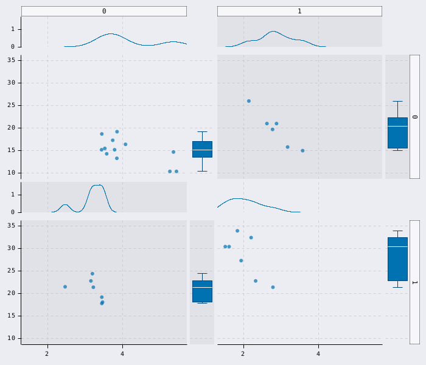
With free facet scales each margin follows its own panel’s scale: a margin histogram bins over its panel’s own range (5 bins per panel here), so its bars span that panel’s axis:
(plot/render-image {:data mtcars
:mapping {:x :wt :y :mpg :facet :cyl}
:facets {:scales {:x :free}}
:charts [(chart/scatter)]
:margins {:bottom {:charts (chart/histogram {:bins 5}) :size 50 :axis true}
:left [(chart/density) (chart/rug)]}}
{:width 900 :height 450})
9.7 Custom grid
:custom-grid replaces the generated layout with a hand-written track grid (see the cljplot2.layout.grid namespace doc): columns and rows of [:fixed px], [:fraction f], [:measured] or [:flexible w] tracks and items placed on them - labels ({:kind :label :text t :role r}, the role required), or whole plots ({:kind :plot :plot p}). Only :labels {:title t} may accompany it; plots in a regular grid are simpler with plot/arrange. The plot below puts a scatter plot and a narrower density over a note row:
(plot/render-image {:custom-grid {:columns [{:size [:flexible 2]} {:size [:flexible 1]}]
:rows [{:size [:flexible 1]} {:size [:measured]}]
:items [{:id :main :column 0 :row 0
:content {:kind :plot
:plot {:data mtcars :mapping {:x :wt :y :mpg}
:charts [(chart/scatter)]}}}
{:id :side :column 1 :row 0
:content {:kind :plot
:plot {:data mtcars :mapping {:x :mpg}
:charts [(chart/density)]}}}
{:id :note :column {:from 0 :to 1} :row 1
:content {:kind :label :role :axis-title
:text "a hand-written grid: 2 : 1 columns, a note row"}}]}
:labels {:title "Custom grid"}}
{:width 800 :height 400})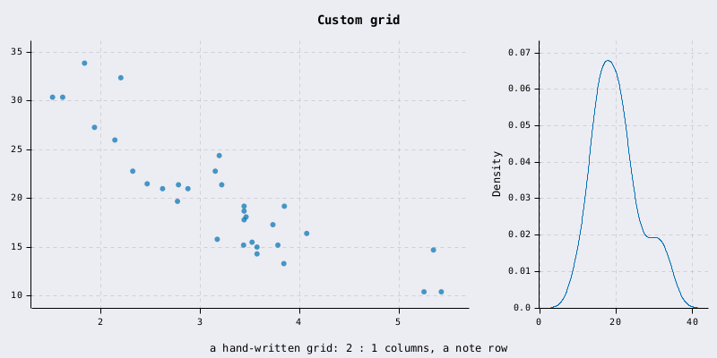
source: notebooks/reference/facets_arrange.clj